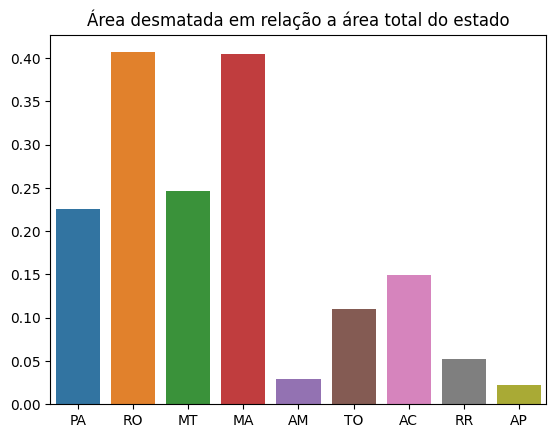
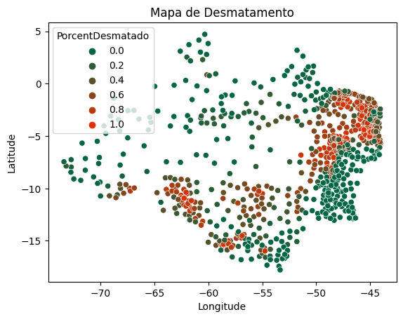

A Amazônia é considerado um dos nossos maiores tesouros nacionais, lar de inúmeras espécies de de plantas e animais e também um regulador importante do clima brasileiro. A Amazônia Legal se estende em uma área de 5.217.423 Km² em mais de 760 municípios brasileiros em 9 estados.
Recentemente há uma preocupação de que o desmatamento tem aumentado nos últimos anos, chegando a um récorde histórico de desmatamento no ano de 2021. Neste projeto será analisado os dados do PRODES para entender a estensão e evolução do desmatamento entre os anos de 2011 e 2021.
Para já responder se houve aumento no desmatamento da Amazônia, temos os seguintes gráficos:
Nos últimos 10 anos houve um aumento de 10,32% no desmatamento da Amazônia onde em apenas 2012 houve uma diminuição nem mesmo uma desaceleração no desmatamento. No total já foi desmatado 826.106 Km² de área florestal até 2021.
Cada estado é afetado em uma escala diferente dos outros, o estado do Mato Grosso, que é estado fronteiriço da Amazônia Legal, teve 24,6% de sua área total desmatada. Para compreender melhor o nível do desmatamento alcançado em 2021, calcula-se a porcentagem da área estadual desmatada em relação a área total do estado:
Em um gráfico mais detalhado, podemos ver a situação de cada município registrado pelo PRODES:
Aproximadamente 3,6% dos municípios da Amazônia Legal foi desmatado e aproximadamente 30,2% estão pelo menos 60% de sua área total desmatada. Assim conclui-se que a preocupação de que o desmatamento da Amazônia tem acelerado e que tem acelerado desde 2012, aproximadamente 16,3% da Amazônia Legal está desmatada, ameaçando a biodiversidade da floresta.